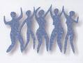
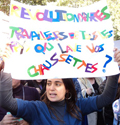
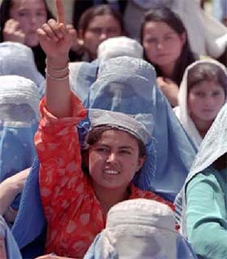
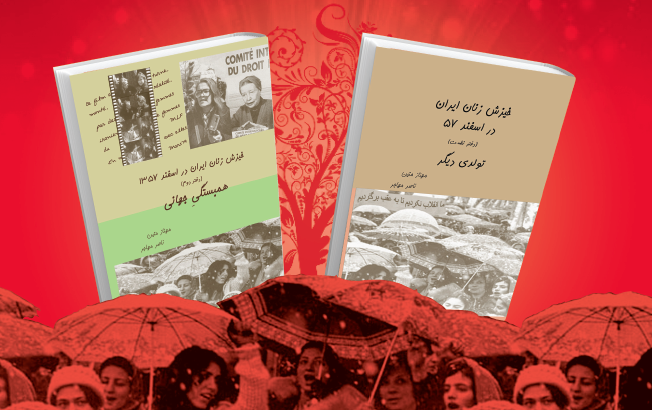

تغییر برای برابری
تغییر برای برابریجمعی از فعالان زنان و دانشجویی در ادامه ای اعتراض های مدنی خود نسبت به سیاست های تبعیض آمیز آموزشی علیه زنان در ایران، از جمله سهمیه بندی جنسیتی صورت گرفته در دانشگا ه ها به خصوص در سال های 90 و 91 با انتشار بیانیه ای اعتراضی از شکایت کنندگان طرح سهمیه بندی جنسیتی به دیوان عدالت اداری حمایت کرده و خواهان لغو سیاست های تبعیض آمیز جنسیتی در عرصه آموزش عالی و رسیدگی به تضییع حقوق افراد زیان دیده شدند.
پذيرش > واژه كليدها > صفحه بندی > ستون وسط
ستون وسط
مقالهها
-
حمایت بیش از 600 فعال مدنی از شکایت به دیوان عدالت درباره سهمیه بندی جنسیتی
1 اكتبر 2013 -
گفتگو با چند تن از فعالان زن درباره روش و منش هاله سحابی
6 ژوئن 2011مرگ آسان و کشتن آسان آدمیان، و این بار بی¬هیچ بهانه¬ای، اعمال خشونت پلیسی و بی¬تحملی حاکمیت را در رسمیت بخشی به بی¬حقوقی شهروندان گسترش داده است. متاسفانه حافظه تاریخی جامعه¬ی ایران رویدادهایی تلخ از این دست بسیار داشته و دارد. هاله از نمونه¬های آشکار آن است.
-

دو امدادی یا کمک زنان به هم برای پیشرفت با هم/ گفتگو با هیلده شایت، شهردارآخن درآلمان/ دلارام علی
10 ژانويه 2010, بوسيلهى pariجوانان مهم ترین گروهی هستند که ثمره تغییر قوانین را تجربه خواهند کرد و درست به همین علت است که باید فعالانه جهت تحقق این خواسته گام بردارند.من فکر می کنم حرکتی نظیر کمپین مثل دو امدادیست.یعنی تا زمان تحقق باید از نسلی به نسل دیگر منتقل شود و نیروهای آن باید تکمیل کننده یکدیگر باشند .
-

تونس، انقلاب و مطالبات زنان : برابری، جدایی دین از سیاست، شهروندی /سوده راد
30 ژانويه 2011روز شنبه، 29 ژانویه 2011، به دعوت انجمن زنان دموکراسی خواه تونس، انجمن تحقیق و توسعه ی زنان تونسی؛ کمیسیون زنان اتحادیه ی زنان شاغل تونسی، جمعیت برابری مغرب و کمیسیون زنان لیگ حقوق بشر تونس تجمعی در یکی از میادین اصلی پایتخت تونس برگزار شد تا نه تنها بر حمایت از حقوق برابر موجود تأکید شود، بلکه برابری در تمامی قوانین حاکم بر زندگی شهروندی و سیاسی مطالبه شود...
-

از همسایه به هم نزدیک تریم / ناهید میرحاج
3 ژوئيه 2012ارتباطاتی که بین ایرانیان و افغانیان است، ما را در مقامی فراتر از دو همسایه و هم مرز قرار می دهد . حوادثی که در چند ماه اخیر در ایران در ارتباط با افغانیها اتفاق افتاده و در مطبوعات و رسانه ها منعکس شده است، ادامه یک داستان یا روایت چهل ساله است. در ضمن هشداری به همه ما هم هست که خشت از زیرپای خود درنیاوریم. هررفتاری که با این مردم داشته باشیم، آئینه ای می شود که خودمان را باید در آن ببینیم. خواندن یک کتاب سبب شد که بیشتر به زندگی این پناهندگان و مهاجرین توجه کنم. پس از مصاحبه با بعضی از این مهاجرین و پناهجویان ، تصمیم دارم در یک سلسله مقاله و مصاحبه بخشی از مشکلات و گرفتاری های زنان و کودکان افغانی و در نهایت ارتباط بین زنان و مردان ایرانی و افغانی که باهم ازدواج کرده اند، را در حد وسع و توانایی هایم منعکس کنم، با این هدف که قدمی در جهت نزدیکی بیشتر با این مردم برداشته باشم...
-
 شیوه های ایستادگی
شیوه های ایستادگی
14 ژوئن 2011آذرماه 1389 ، در آستانه روز جهانی مبارزه با خشونت علیه زنان ، اعضای کمپین یک میلیون امضا در چند شهر ایران کارگاه مبارزه با خشونت خانگی را برگزار کردند و در این کارگاه ها شرکت کننده را به نوشتن روایت خود درباره خشونت تشویق کردند. از زنان شرکت کننده در این کارگاه خواسته شده بود تصویر و یا شئی را که برای آنان یادآور یکی از تجربه های خشونت است، همراه خود بیاورند و درباره آن بنویسند. خروجی این کارگاه ها انتشار یک دفترچه و برگزاری یک نمایشگاهِ دو روزه همزمان با 25 نوامبر، روز جهانی مقابله با خشونت علیه زنان و سپس راه اندازی یک آرشیو آنلاین در 8 مارس 2011 (1389) با نام تجربه ایستادگی بود.
-

اگر آنها می دانستند چقدر چشم دنبال آنهاست*
11 آوريل 2013تغییر برای برابری - در ماه گذشته کتاب "خیزش زنان ایران در اسفند 57 " در دوجلد 1000 صفحه ای توسط مهناز متین و ناصر مهاجر اخیرا توسط نشر نقطه در شهر کلن آلمان به چاپ رسیده است. عنوان جلد اول این مجموعه، تولدی دیگر و جلد دوم، همبستگی جهانی است. در نشستی که به دعوت دکتر شهرزاد مجاب و به مناسبت چهلمین سال تاسیس رشته مطالعات زنان در دانشگاه تورنتو برگزار شد مهناز متین و ناصر مهاجر نویسندگان این کتاب به معرفی آن پرداختند
-
 هزار توی خشونت؛ از خشونتهای پراکنده تا خشونتهای سازمان یافته علیه کودکان و زنان / به مناسبت 25 نوامبر
هزار توی خشونت؛ از خشونتهای پراکنده تا خشونتهای سازمان یافته علیه کودکان و زنان / به مناسبت 25 نوامبر
26 نوامبر 2012بسیاری از کودکان دیروز که امروز در سن بزرگسالی هستند بیاد می آوردند که به سبب سرپیچی از دستورات پدر چطور مبتلا به انواع تنبیه بدنی مانند شلاق خوردن با کمربند یا ضربه های سخت مشت، لگد و سیلی بوده اند که شاید هم به سبب همین تنبیهات برای همیشه دچار ضایعههای جسمی مانند پاره شدن پرده گوش یا نابینایی شدهاند. وقتی که کودکان در سن قبل از بلوغ به سر می برند ماهیت این خشونتها به جز در موارد مشخص چندان تفکیک شده نیست، اما با بلوغ جسمی و جنسی این کودکان نوع خشونتها نیز به شدت و سختی تفکیک می شود. در جوامع مردسالار سنتی حفظ سنتها یکی از ضروریات برای بقای آن جامعه است...
-
هفته دوم خرداد با زنان: دستبند بر دستان نسرین؛ کفن بر پیکر هاله
7 ژوئن 2011هفته ی دوم خرداد به مانند بسیار هفته های دیگر که در چند سال اخیر آمدند و رفتندخبر خوبی برای زنان نداشت، اما این بار نه تنها خبر خوبی نداشت که زنان ایرانی را شوکه کرد. حضور نسرین در دادگاه برای لغو پروانه وکالتش با دستبند اگرچه که او روحیه ای ستایش برانگیز از خود نشان داد، فعالان زن را در اندوهی سخت فرو برد که وکیل همیشه حاضر خود را دستبند به دست دیدند. هنوز این خبر ته نشین نشده بود که خبر مرگ هاله سحابی در مراسم تشییع پدر مانند پتک فرود آمد که این بار خشونت سازمان یافته زنانی را هدف گرفته بود که در زندگی خود جز از صلح و برابری نگفته بودند...
-
 سمیه رشیدی: باید این خشم را آگاهانه هدایت کنی تا بتوانی مقاومت کنی ( سمیه باید آزاد شود)
سمیه رشیدی: باید این خشم را آگاهانه هدایت کنی تا بتوانی مقاومت کنی ( سمیه باید آزاد شود)
31 دسامبر 2009, بوسيلهى pariسمیه از ورود به دانشگاه های آزاد و سراسری برای مقطع فوق لیسانس در رشته مطالعات زنان محروم شد. گویا ستاره دار بودن برای ورود به "دانشگاه اوین" امتیاز محسوب می شود. پس از محرومیت او از تحصیل گفتگویی با او داشتیم که می خوانید.
0 | ... | 250 | 260 | 270 | 280 | 290 | 300 | 310 | 320 | 330 | ... | 450